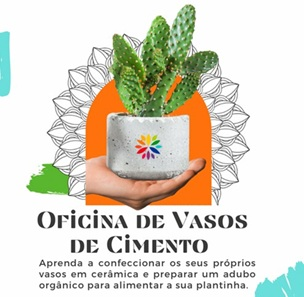
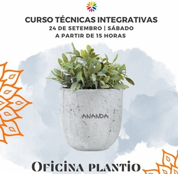
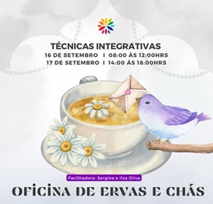
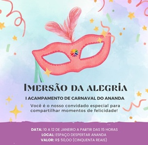
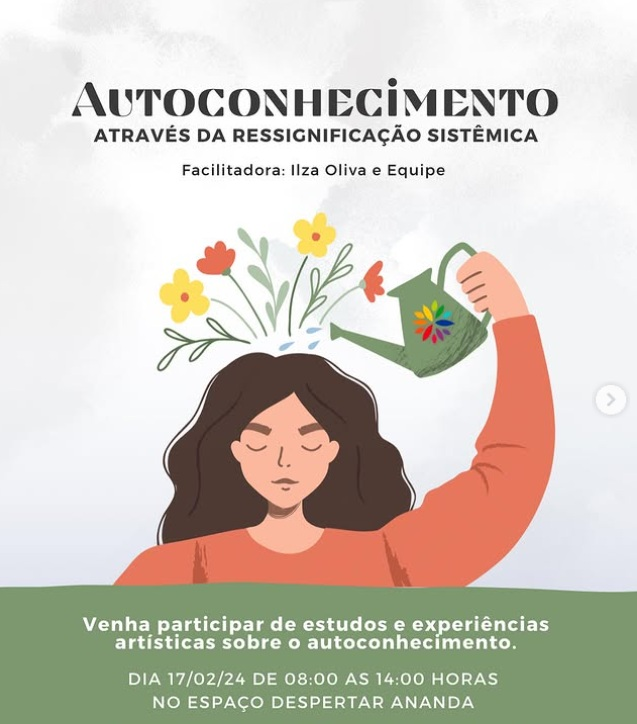
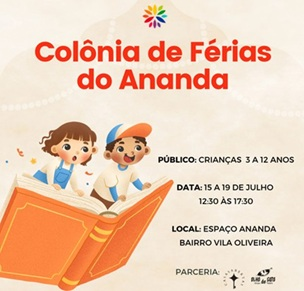
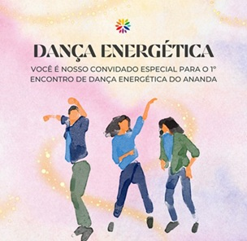
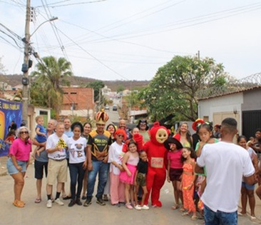

<!DOCTYPE html>
<html lang="pt-br">
<head>
    <meta charset="UTF-8">
    <meta name="viewport" content="width=device-width, initial-scale=1.0">
    <title>Vivências | Espaço Despertar Ananda</title>
    
    <link rel="stylesheet" href="style.css">
    <link rel="preconnect" href="https://fonts.googleapis.com">
    <link rel="preconnect" href="https://fonts.gstatic.com" crossorigin>
    <link href="https://fonts.googleapis.com/css2?family=Lora:ital,wght@0,400;0,600;1,400&family=Poppins:wght@300;400;500;600&display=swap" rel="stylesheet">
    <link rel="stylesheet" href="https://cdnjs.cloudflare.com/ajax/libs/font-awesome/6.0.0/css/all.min.css">

    <script src="https://identity.netlify.com/v1/netlify-identity-widget.js"></script>
</head>
<body>
    <script>
      if (window.netlifyIdentity) {
        window.netlifyIdentity.on("init", user => {
          if (!user) {
            window.netlifyIdentity.on("login", () => {
              document.location.href = "/admin/";
            });
          }
        });
      }
    </script>
</body>
</html>

    <header>
        <nav class="nav-container">
            <div class="logo-wrapper">
                <a href="index.html">
                    
                </a>
                <span class="site-tagline">YOGA • AYURVEDA • MEDICINA TRADICIONAL CHINESA • ARTE</span>
            </div>
            <ul class="nav-links">
                <li><a href="index.html">INÍCIO</a></li>
                <li><a href="o-espaco.html">O ESPAÇO</a></li>
                <li><a href="novos-eventos.html">NOVOS EVENTOS</a></li> 
                <li><a href="vivencias.html">VIVÊNCIAS</a></li>
                <li><a href="videos.html">VÍDEOS</a></li>
                <li><a href="contato.html">CONTATO</a></li>
            </ul>
            <a href="https://wa.me/5538999999999" target="_blank" class="btn-agendar-floating"><i class="fab fa-whatsapp"></i> Agendar</a>
            <div class="burger">
                <div class="line1"></div><div class="line2"></div><div class="line3"></div>
            </div>
        </nav>
    </header>

    <main>
        <section class="page-header">
            <div class="container text-center">
                <h1>Nossos Eventos</h1>
                <p>Momentos de alegria e conexão delicadamente moldados para nutrir o ser.</p>
            </div>
        </section>

        <section class="intro-vivencias">
            <div class="container">
                <div class="text-block-center">
                    <i class="fas fa-star decorative-icon"></i>
                    <h2>Histórias de Transformação</h2>
                    <p class="lead-text">
                        Cada projeto no <strong>Espaço Despertar Ananda</strong> é pensado para inspirar e nutrir a mente, o corpo e o espírito através do autoconhecimento e da arte.
                    </p>
                </div>
            </div>
        </section>

        <section class="eventos-lista-section">
            <div class="container">
                
                <article class="evento-detalhado">
                    <div class="evento-img-large">
                        
                        <div class="data-badge"><span class="dia">18</span><span class="mes">SET</span><span class="ano">2021</span></div>
                    </div>
                    <div class="evento-conteudo-large">
                        <span class="tag-categoria">Arte Terapia</span>
                        <h3>Oficina de Vasos de Cimento</h3>
                        <h4 class="subtitulo-evento">Aprenda a confeccionar os seus próprios vasos e a preparar um adubo orgânico.</h4>
                        <div class="texto-descritivo">
                            <p>Iniciamos nossa série de oficinas de temporada com a construção de vasos de cimento e preparação de adubos orgânicos para as plantinhas. Uma vivência leve e fresca sob nossa arborização.</p>
                        </div>
                    </div>
                </article>

                <div class="linha-divisoria"></div>

                <article class="evento-detalhado">
                    <div class="evento-img-large">
                        
                        <div class="data-badge"><span class="dia">24</span><span class="mes">SET</span><span class="ano">2021</span></div>
                    </div>
                    <div class="evento-conteudo-large">
                        <span class="tag-categoria">Jardinagem</span>
                        <h3>Oficina Plantio - Aprenda a realizar o plantio adequado de sua planta</h3>
                        <h4 class="subtitulo-evento">Veja sua plantinha florescer nesta primavera.</h4>
                        <div class="texto-descritivo">
                            <p>Nossa segunda oficina de primavera ensinou as técnicas corretas de plantio em vasos de cimento para garantir saúde e beleza às plantas.</p>
                        </div>
                    </div>
                </article>

                <div class="linha-divisoria"></div>

                <article class="evento-detalhado">
                    <div class="evento-img-large">
                        
                        <div class="data-badge"><span class="dia">25</span><span class="mes">JUN</span><span class="ano">2023</span></div>
                    </div>
                    <div class="evento-conteudo-large">
                        <span class="tag-categoria">Medicina Chinesa</span>
                        <h3>Oficina de Inverno - Aumente sua Imunidade</h3>
                        <h4 class="subtitulo-evento">Cuidando da nossa Morada Interna com conhecimentos da MTC.</h4>
                        <div class="texto-descritivo">
                            <p>Um domingo dedicado ao fortalecimento do sistema imunológico através de práticas ancestrais e da deliciosa Cozinha Ananda.</p>
                        </div>
                    </div>
                </article>

                <div class="linha-divisoria"></div>

                <article class="evento-detalhado">
                    <div class="evento-img-large">
                        
                        <div class="data-badge"><span class="dia">16</span><span class="mes">SET</span><span class="ano">2023</span></div>
                    </div>
                    <div class="evento-conteudo-large">
                        <span class="tag-categoria">Ervas & Alquimia</span>
                        <h3>Oficina de Ervas e Chás</h3>
                        <h4 class="subtitulo-evento">Conhecendo melhor as ervas e saboreando deliciosos biscoitinhos.</h4>
                        <div class="texto-descritivo">
                            <p>Aprenda a acolher a primavera preparando chás medicinais e saboreando receitas especiais do nosso espaço.</p>
                        </div>
                    </div>
                </article>

                <div class="linha-divisoria"></div>

                <article class="evento-detalhado">
                    <div class="evento-img-large">
                        
                        <div class="data-badge"><span class="dia">10</span><span class="mes">JAN</span><span class="ano">2024</span></div>
                    </div>
                    <div class="evento-conteudo-large">
                        <span class="tag-categoria">Imersão</span>
                        <h3>Imersão da Alegria - 1º Acampamento de Carnaval</h3>
                        <h4 class="subtitulo-evento">Lindos momentos de alegria e vida ao ar livre.</h4>
                        <div class="texto-descritivo">
                            <p>Uma programação especial de Carnaval com camping, conexão com a natureza e convivência comunitária.</p>
                        </div>
                    </div>
                </article>

                <div class="linha-divisoria"></div>

                <article class="evento-detalhado">
                    <div class="evento-img-large">
                        
                        <div class="data-badge"><span class="dia">17</span><span class="mes">FEV</span><span class="ano">2024</span></div>
                    </div>
                    <div class="evento-conteudo-large">
                        <span class="tag-categoria">Método Central</span>
                        <h3>Autoconhecimento através da Ressignificação Sistêmica</h3>
                        <h4 class="subtitulo-evento">Estudos e experiências artísticas para o mergulho interior.</h4>
                        <div class="texto-descritivo">
                            <p>Vivência profunda que integra a visão sistêmica e a arte como ferramentas de transformação pessoal.</p>
                        </div>
                    </div>
                </article>

                <div class="linha-divisoria"></div>

                <article class="evento-detalhado">
                    <div class="evento-img-large">
                        
                        <div class="data-badge"><span class="dia">15</span><span class="mes">JUL</span><span class="ano">2024</span></div>
                    </div>
                    <div class="evento-conteudo-large">
                        <span class="tag-categoria">Infantil</span>
                        <h3>Colônia de Férias do Ananda</h3>
                        <h4 class="subtitulo-evento">Dança, teatro, música e pintura para crianças.</h4>
                        <div class="texto-descritivo">
                            <p>Uma semana de artes integradas e brincadeiras para crianças de 03 a 12 anos em espaços temáticos.</p>
                        </div>
                    </div>
                </article>

                <div class="linha-divisoria"></div>

                <article class="evento-detalhado">
                    <div class="evento-img-large">
                        
                        <div class="data-badge"><span class="dia">20</span><span class="mes">JUL</span><span class="ano">2024</span></div>
                    </div>
                    <div class="evento-conteudo-large">
                        <span class="tag-categoria">Celebração</span>
                        <h3>Fogueira do Ananda</h3>
                        <h4 class="subtitulo-evento">Venha se aquecer e compartilhar momentos especiais conosco.</h4>
                        <div class="texto-descritivo">
                            <p>Um encontro noturno de celebração e trocas ao redor do fogo sagrado do nosso espaço.</p>
                        </div>
                    </div>
                </article>

                <div class="linha-divisoria"></div>

                <article class="evento-detalhado">
                    <div class="evento-img-large">
                        
                        <div class="data-badge"><span class="dia">29</span><span class="mes">SET</span><span class="ano">2024</span></div>
                    </div>
                    <div class="evento-conteudo-large">
                        <span class="tag-categoria">Movimento</span>
                        <h3>Primeiro Encontro de Dança Energética</h3>
                        <h4 class="subtitulo-evento">Bem-estar integral através do movimento consciente.</h4>
                        <div class="texto-descritivo">
                            <p>Vivência em grupo que utiliza o movimento corporal para promover o fluxo energético e o equilíbrio emocional.</p>
                        </div>
                    </div>
                </article>

                <div class="linha-divisoria"></div>

                <article class="evento-detalhado">
                    <div class="evento-img-large">
                        
                        <div class="data-badge"><span class="dia">--</span><span class="mes">DEZ</span><span class="ano">2024</span></div>
                    </div>
                    <div class="evento-conteudo-large">
                        <span class="tag-categoria">Ação Social</span>
                        <h3>Dia das Crianças Solidário</h3>
                        <h4 class="subtitulo-evento">Levando alegria a centenas de crianças.</h4>
                        <div class="texto-descritivo">
                            <p>Fruto de um trabalho conjunto com patrocinadores, levamos esperança e sorrisos através de doações e carinho.</p>
                        </div>
                    </div>
                </article>

            </div>
        </section>
    </main>

    <footer>
        <div class="footer-content">
            <div class="footer-section">
                <h4>Espaço Despertar Ananda</h4>
                <p>Ressignificação Sistêmica e Princípios Védicos.</p>
                
                <a href="equipe.html" class="link-admin-footer">
                    <i class="fas fa-lock"></i> Acesso Administrativo
                </a>
            </div>

            <div class="footer-section">
                <h4>Siga-nos</h4>
                <div class="socials">
                    <a href="#"><i class="fab fa-instagram"></i></a>
                    <a href="#"><i class="fab fa-youtube"></i></a>
                </div>
            </div>
        </div>
        <div class="footer-bottom">© 2025 Espaço Despertar Ananda.</div>
    </footer>

    <script src="script.js"></script>
</body>
</html>